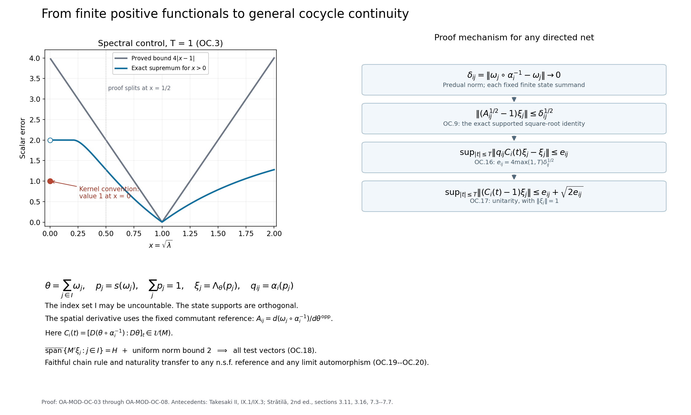

Compact-time continuity along automorphism orbits
Changes of an automorphism can move the support of every finite state used to test a weight. This lesson proves compact-time strong* continuity of its weight cocycle by estimating those finite pieces, recovering the omitted components through unitarity, and then changing the faithful reference. The algebra, its standard Hilbert space and all directed index sets are arbitrary.
Statement and conventions
Let \((M,H,J,P)\) be a standard form of an arbitrary von Neumann algebra. Let \(\varphi\) be a normal semifinite faithful weight, and let \(\alpha_i\to\alpha\) in the u-topology on \(\operatorname{Aut}(M)\): for every \(f\in M_*\), one has \(\|f\circ\alpha_i-f\circ\alpha\|\to0\). The index set is any directed set. Define
\[ C_\varphi(\beta,t)=[D(\varphi\circ\beta^{-1}):D\varphi]_t. \tag{OC.1} \]Then, for every \(\eta\in H\) and compact \(K\subset\mathbb R\),
\[ \sup_{t\in K}\|(C_\varphi(\alpha_i,t) -C_\varphi(\alpha,t))\eta\|\longrightarrow0. \tag{OC.2} \]The same assertion holds for adjoints. Every compact \(K\) is contained in \([-T,T]\) for some finite \(T\ge0\), so it is enough to prove the estimates below on those intervals. There is no assumption of separability, sigma-finiteness, a countable state family, ordered weights, bounded densities, or strongly convergent inner lifts.
Inner products are linear in the first variable. For a positive self-adjoint operator \(A\) with possibly nonzero kernel, write \(A^{[it]}\) for the bounded Borel function equal to \(\lambda^{it}\) on \(\lambda>0\) and to zero at \(\lambda=0\), including when \(t=0\). Its value at zero time is the support projection, not necessarily the identity. Ordinary imaginary powers of an injective positive operator are unitary.
The case \(M=0\) is immediate. We work with \(M\ne0\) below.
Exact inputs and source boundary
We use \(\mathfrak n_\theta=\{x:\theta(x^*x)<\infty\}\) and the GNS map \(\Lambda_\theta\) as in The finite part of an extended-valued weight and The GNS construction for an arbitrary weight. The notation \(M_\theta\) denotes the fixed algebra of the modular group, as identified with the centralizer. For a faithful normal semifinite weight \(\chi\) on \(M'\), \(D_\chi\) is its bounded-vector domain and \(R_\chi(\zeta)\Lambda_\chi(y)=y\zeta\); the exact domain and coefficient construction are in Conventions and the actual prerequisites.
The following existing written providers supply the other inputs:
- The concrete predual and its intrinsic norm through The sigma-strong seminorms are vector seminorms and WS-06: normal functional supports, separation and corner compression; WG-008: finite positive contractions detecting semifiniteness; NW-12: arbitrary sums of normal weights.
- Every von Neumann algebra has such a weight and CW-05--07: existence of n.s.f. corner weights, faithful diagonal completions and centralizer compression. CZ-09 supplies the projection criterion; CZ-05, through (CZ.3), supplies finite centralizer right multiplication.
- Canonical comparison of the positive cones through One Hilbert space for all n.s.f. GNS maps and SE: comparison of standard forms, natural-cone vectors, \(\|\xi_\omega-\xi_\nu\|\le\|\omega-\nu\|^{1/2}\), common standard GNS maps and the polar factor \(J\) of the relative Tomita map.
- SC and SI-09--12: spatial forms, supported derivatives, the graph-core construction for nonfaithful numerators, and identification of the faithful relative GNS operator with \(d\psi/d\theta^{\mathrm{opp}}\).
- The balanced-matrix cocycle is independent of the reference, CH-02 and PT-02: the spatial formula for faithful cocycles, the faithful chain rule and simultaneous naturality.
- SK: Borel functional calculus and scalar spectral integration.
We shall also use two elementary compactness arguments, recorded here in full. Suppose that \(\sup_{i,t}\|E_i(t)\|\le b<\infty\) and that \(\sup_{t\in K}\|E_i(t)\zeta\|\to0\) for every fixed vector \(\zeta\). For a norm-compact set \(L\subset H\), choose a finite \(\varepsilon\)-net \(\zeta_1,\ldots,\zeta_n\). Then
\[ \sup_{\zeta\in L,t\in K}\|E_i(t)\zeta\| \le b\varepsilon+\max_{1\le k\le n}\sup_{t\in K}\|E_i(t)\zeta_k\|. \tag{OC.22} \]The maximum tends to zero: finitely many eventual net indices have a common upper bound. Taking the limit superior and then \(\varepsilon\downarrow0\) proves uniformity on \(L\).
Inverse convergence in the automorphism group is also automatic: for every normal \(f\), composition is isometric and \(\|f\circ\alpha_i^{-1}-f\circ\alpha^{-1}\| =\|f-f\circ\alpha^{-1}\alpha_i\|\to0\).
For the second argument, let \(\beta_i\to\beta\) in the u-topology and let \(V_i,V\) be their canonical standard implementers. SF-12 and SE-11 give \(V_i\to V\) strongly. The identity \(\|(V_i^*-V^*)\zeta\|=\|\zeta-V_iV^*\zeta\|\) also gives strong convergence of the adjoints. If \(a_t\in M\) is a uniformly bounded strongly continuous family, and \(\zeta_t\in H\) is norm continuous, both on a compact \(K\), then
\[ (\beta_i(a_t)-\beta(a_t))\zeta_t =(V_i-V)a_tV^*\zeta_t +V_i a_t(V_i^*-V^*)\zeta_t. \tag{OC.23} \]Both \(\{\zeta_t:t\in K\}\) and \(\{a_tV^*\zeta_t:t\in K\}\) are norm compact. For the latter assertion, bounded strong continuity of \(a_t\), together with norm continuity of \(\zeta_t\), proves continuity of their product on each vector. Applying (OC.22) to the two differences of implementers proves that (OC.23) tends to zero uniformly on \(K\). Neither argument requires sequences or a countable dense set.
Mathematical antecedents include Takesaki, Theory of Operator Algebras II, VIII.2 (strictly semifinite weights), IX.1 (natural cones), IX.3 (spatial derivatives), and XII.6, Lemma 6.14(iii), printed 450--451. The latter source states continuity of the quantized modulus, an application of weight cocycle continuity. The arbitrary-net proof below establishes the general weight-theoretic input. The proof here handles nonfaithful state summands inside a generally infinite faithful weight; it does not assume that every algebra has a faithful normal state. The relative and spatial ingredients, with their faithful graph identities and closed-form covariance, are treated in Takesaki II, VIII.3 and IX.3; they underlie the derivation in OC-05; that derivation does not apply an invertible covariance formula to a projection.
The reader can enter through the natural-cone estimate and standard implementation, the spatial derivative construction, and the faithful chain identity.
A scalar estimate which retains the kernel
For \(T\ge0\), put \(L_T=4\max\{1,T\}\). For every \(\lambda\ge0\),
\[ \sup_{|t|\le T}|\lambda^{[it]}-1| \le L_T|\sqrt\lambda-1|. \tag{OC.3} \]Here \(0^{[it]}=0\). At \(\lambda=0\) the left side is one. For \(0<\sqrt\lambda<1/2\), use the bound two and \(|\sqrt\lambda-1|>1/2\). For \(x=\sqrt\lambda\ge1/2\),
\[ |e^{2it\log x}-1|\le2|t|\,|\log x| \le4T|x-1|, \]because the derivative of \(\log x\) is at most two on the interval between \(x\) and one. This proves (OC.3), including \(x=1\).
Consequently, for every positive self-adjoint \(A\) and \(\xi\in D(A^{1/2})\), spectral integration gives
\[ \sup_{|t|\le T}\|(A^{[it]}-1)\xi\| \le L_T\|(A^{1/2}-1)\xi\|. \tag{OC.4} \]The inequality is integrated separately for each \(t\), with one common bound; no exchange of a supremum with a signed integral is needed. This estimate asserts continuity on the particular vector. It does not assert convergence of support projections on all of \(H\).
A faithful reference assembled from finite orthogonal pieces
There is a family of nonzero normal states \((\omega_j)_{j\in I}\) whose support projections \(p_j\) are pairwise orthogonal and satisfy \(\sum_jp_j=1\) strongly. Indeed use Zorn's lemma on orthogonal families of supports. If their supremum leaves a nonzero projection \(q\), normal positive separation gives a positive normal functional nonzero on \(q\). Its compression to \(qMq\), normalized, has nonzero support at most \(q\), contradicting maximality. This construction places no cardinality bound on \(I\).
Define, for \(x\in M_+\),
\[ \theta(x)=\sum_{j\in I}\omega_j(x) :=\sup_{F\subset I\text{ finite}}\sum_{j\in F}\omega_j(x). \tag{OC.5} \]NW-12 proves normality and the weight axioms. If \(\theta(x)=0\), each \(p_jxp_j\) is zero by faithfulness of \(\omega_j\) on its support corner. Thus \(x^{1/2}p_j=0\) for all \(j\), whence \(x=0\). For \(p_F=\sum_{j\in F}p_j\), one has \(\theta(p_F)=|F|<\infty\), and \(p_F\uparrow1\). WG-008 proves semifiniteness.
For each \(j\), the unitary \(u_j=2p_j-1\) leaves every summand in (OC.5) invariant under conjugation: it acts by a scalar sign on that summand's support. Hence \(\theta(u_jxu_j)=\theta(x)\) on all positive elements. CZ-09 gives \(p_j\in M_\theta\). Its compression is exactly
\[ \theta(p_jxp_j)=\omega_j(x). \tag{OC.6} \]Realize \(\theta\)'s GNS construction in the given standard form, using SF/SE, and abbreviate its standard GNS map by \(\Lambda_\theta\). Then
\[ \xi_j:=\Lambda_\theta(p_j)=\xi_{\omega_j}\in P, \qquad J\xi_j=\xi_j, \qquad \Delta_\theta^{it}\xi_j=\xi_j. \tag{OC.7} \]To check the identities, finite centralizer right multiplication by \(p_j\) is an orthogonal projection, while adjunction fixes \(\Lambda_\theta(p_j)\). The same finite-projection argument as SF-10 gives \(\Delta_\theta\xi_j=\xi_j\) and membership in the natural cone. Its represented functional is \(x\mapsto\theta(p_jxp_j)\), which is \(\omega_j\); uniqueness of cone representatives proves (OC.7). Moreover SF-11 gives
\[ \overline{M'\xi_j}=p_jH, \qquad \overline{\operatorname{span}\{M'\xi_j:j\in I\}}=H. \tag{OC.8} \]The square-root identity on a finite centralizer vector
The following lemma is the needed support-sensitive ingredient. Let \(\theta\) be n.s.f., let \(p\in M_\theta\) be a projection with \(\theta(p)<\infty\), and put \(\omega(x)=\theta(pxp)\), \(\xi=\Lambda_\theta(p)=\xi_\omega\). On \(M'\), let \(\chi=\theta^{\mathrm{opp}}\), that is \(\chi(y)=\theta(JyJ)\) for \(y\in M'_+\). For any bounded normal positive functional \(\nu\), put \(A_\nu=d\nu/d\chi\). Then
\[ \xi\in D(A_\nu^{1/2}), \qquad A_\nu^{1/2}\xi=Jp\xi_\nu, \qquad \|(A_\nu^{1/2}-1)\xi\| \le\|\nu-\omega\|^{1/2}. \tag{OC.9} \]Here is a derivation from the faithful relative-GNS theorem, rather than an assumed extension of it. If \(\nu=0\), the derivative and cone vector are zero, and the assertion follows directly. Otherwise let \(q=s(\nu)\). Choose an n.s.f. weight \(\tau\) on \((1-q)M(1-q)\), with the zero-corner convention, and form
\[ \widehat\nu(x)=\nu(qxq)+\tau((1-q)x(1-q)). \tag{OC.10} \]CW-06 makes this n.s.f., with \(q\) in its centralizer. Since \(\widehat\nu(q)=\nu(1)<\infty\), the standard finite-projection identity just used gives \(\Lambda_{\widehat\nu}(q)=\xi_\nu\).
Write \(\widehat A=d\widehat\nu/d\chi\). The projection \(q\) reduces \(\widehat A\): the spatial modular implementation sends it to \(\sigma_t^{\widehat\nu}(q)=q\), and hence it commutes with the spectral calculus. Centralizer compression of the numerator gives
\[ A_\nu=(\widehat A|_{qH})\oplus0_{(1-q)H}. \tag{OC.11} \]This identification includes square-root domains. For clarity, on the common bounded-vector domain \(D_\chi\), covariance of its coefficient map gives
\[ \nu(R_\chi(\zeta)R_\chi(\zeta)^*) =\widehat\nu(qR_\chi(\zeta)R_\chi(\zeta)^*q) =q_{\widehat\nu,\chi}[q\zeta]. \]The spatial form core for \(\widehat A\), compressed by its reducing projection \(q\), is a core on \(qH\). The vectors \((1-q)D_\chi\) are dense in the orthogonal complement and have zero energy. Closing their direct sum proves (OC.11), as in SI-10.
Now \(qp\in\mathfrak n_\theta\), since this is a left ideal and \(p\) is finite. Also \((qp)^*=pq\in\mathfrak n_{\widehat\nu}\), because \(\widehat\nu(qpq)=\nu(p)\le\nu(1)\). Thus \(qp\) belongs to the exact mixed finite-star domain of SF-13 and SI-12. Their common polar conjugation and derivative identification give
\[ \widehat A^{1/2}\Lambda_\theta(qp) =J\Lambda_{\widehat\nu}(pq) =Jp\Lambda_{\widehat\nu}(q)=Jp\xi_\nu. \tag{OC.12} \]The vector on the left is \(\widehat A^{1/2}q\xi\). Equation (OC.11) therefore proves the domain and equality in (OC.9). Finally \(Jp\xi=\xi\) and the cone-vector estimate give
\[ \|(A_\nu^{1/2}-1)\xi\| =\|Jp(\xi_\nu-\xi_\omega)\| \le\|\xi_\nu-\xi_\omega\| \le\|\nu-\omega\|^{1/2}. \]No faithful state on \(M\) was introduced. The auxiliary completion is used only to invoke already proved faithful graph formulas; the derivative on the left of (OC.9) is independent of it.
Combining (OC.4) and (OC.9) yields the quantitative estimate
\[ \sup_{|t|\le T}\|(A_\nu^{[it]}-1)\xi\| \le L_T\|\nu-\omega\|^{1/2}. \tag{OC.13} \]Automorphism continuity at the identity on one summand
Assume first \(\alpha_i\to\mathrm{id}\). Use the reference \(\theta\) from OC-04 and its opposite \(\chi\). Write
\[ \theta_i=\theta\circ\alpha_i^{-1},\quad \nu_{ij}=\omega_j\circ\alpha_i^{-1},\quad q_{ij}=\alpha_i(p_j),\quad B_i=d\theta_i/d\chi,\quad B=d\theta/d\chi=\Delta_\theta. \tag{OC.14} \]The equality for \(B\) is SI-12 with equal weights. The projection \(q_{ij}\) lies in \(M_{\theta_i}\), by weight transport, and \((\theta_i)_{q_{ij}}=\nu_{ij}\). Consequently the same compressed spatial-form argument used in (OC.11) gives
\[ (d\nu_{ij}/d\chi)^{[it]}=q_{ij}B_i^{it}. \tag{OC.15} \]In particular this formula is valid at \(t=0\); its two sides equal \(q_{ij}\).
By the u-topology, \(\delta_{ij}:=\|\nu_{ij}-\omega_j\|\to0\) for each fixed \(j\). Using \(B^{-it}\xi_j=\xi_j\), the faithful cocycle formula and (OC.13) yield
\[ \sup_{|t|\le T} \|q_{ij} C_\theta(\alpha_i,t)\xi_j-\xi_j\| \le e_{ij}:=L_T\delta_{ij}^{1/2}\longrightarrow0. \tag{OC.16} \]A projection on the first term cannot simply be discarded. Here is the required estimate. Set \(r_j=\|\xi_j\|\) (equal to one for the states chosen above), \(v=q_{ij}C_\theta(\alpha_i,t)\xi_j\), and \(w=(1-q_{ij})C_\theta(\alpha_i,t)\xi_j\). They are orthogonal, and unitarity gives \(\|v\|^2+\|w\|^2=r_j^2\). Hence
\[ \|w\|^2=(r_j-\|v\|)(r_j+\|v\|) \le2r_j\|v-\xi_j\|\le2r_je_{ij}. \]The triangle inequality proves
\[ \sup_{|t|\le T}\|(C_\theta(\alpha_i,t)-1)\xi_j\| \le e_{ij}+\sqrt{2r_je_{ij}}\longrightarrow0. \tag{OC.17} \]This argument does not require the supports of arbitrary norm-convergent functionals to converge. It recovers the omitted component from the full cocycle's unitarity.
From finite vectors to the arbitrary standard Hilbert space
For \(y'\in M'\), membership of the cocycle in \(M\) gives
\[ \|(C_\theta(\alpha_i,t)-1)y'\xi_j\| \le\|y'\|\,\|(C_\theta(\alpha_i,t)-1)\xi_j\|. \]Thus (OC.17) holds on finite linear combinations of these vectors. For finitely many summands, choose a common eventual net index, using directedness. OC-04 says their span is dense in \(H\). Since \(\|C_\theta(\alpha_i,t)-1\|\le2\), approximating an arbitrary vector by one vector in this span proves
\[ \sup_{|t|\le T}\|(C_\theta(\alpha_i,t)-1)\eta\|\to0 \quad(\eta\in H). \tag{OC.18} \]There is no diagonal choice across the possibly uncountable index set \(I\): each vector approximation uses only finitely many indices.
Change the reference, change the limit, and take adjoints
For another n.s.f. reference \(\varphi\), put \(d_t=[D\varphi:D\theta]_t\). Chain rule and naturality give
\[ C_\varphi(\beta,t) =\beta(d_t)C_\theta(\beta,t)d_t^*. \tag{OC.19} \]For \(\alpha_i\to\mathrm{id}\), subtract the identity from this formula. On a vector \(\eta\), the resulting terms are
\[ \alpha_i(d_t)(C_\theta(\alpha_i,t)-1)d_t^*\eta, \qquad (\alpha_i(d_t)-d_t)d_t^*\eta. \]For compact time intervals, \(\{d_t^*\eta\}\) is norm compact. OC-07 and the finite-covering estimate (OC.22) control the first term. Equation (OC.23) controls the second: canonical standard implementers of \(\alpha_i\) converge strongly together with their adjoints, and the bounded family \(d_t\) is strongly continuous. This proves (OC.2) at the identity for every n.s.f. reference.
For a general limit \(\alpha\), set \(\beta_i=\alpha^{-1}\alpha_i\). Then \(\beta_i\to\mathrm{id}\), and the chain rule gives
\[ C_\varphi(\alpha\beta_i,t) =\alpha(C_\varphi(\beta_i,t))C_\varphi(\alpha,t). \tag{OC.20} \]The fixed implementer of \(\alpha\) and the compact family of vectors obtained from \(C_\varphi(\alpha,t)\eta\) reduce this to the result at the identity, again by (OC.22). This proves (OC.2).
Finally, if \(U_i(t)=C_\varphi(\alpha_i,t)\) and \(U(t)=C_\varphi(\alpha,t)\), then
\[ \|(U_i(t)^*-U(t)^*)\eta\| =\|(U(t)-U_i(t))U(t)^*\eta\|. \tag{OC.21} \]The set \(\{U(t)^*\eta:t\in K\}\) is compact, so (OC.22) proves the adjoint assertion.
Scope checks and a two-dimensional example
On \(M=M_2(\mathbb C)\) in its Hilbert--Schmidt standard form, take \(\theta=\operatorname{Tr}\), \(p=\mathrm{diag}(1,0)\), and \(\omega(x)=\operatorname{Tr}(px)\). If \(\nu_\varepsilon(x)=\operatorname{Tr}(h_\varepsilon x)\) with \(h_\varepsilon=\mathrm{diag}(1,\varepsilon)\), then \(\|\nu_\varepsilon-\omega\|=\varepsilon\), \(\xi_\omega=p\), and \(A_{\nu_\varepsilon}\) is left multiplication by \(h_\varepsilon\). Its supported imaginary powers fix \(p\) for every \(\varepsilon\ge0\). Nevertheless, the support of \(h_\varepsilon\) is the identity for every \(\varepsilon>0\), whereas the limit support is \(p\). Thus the supported-vector lemma proves exactly what is needed and no false global support-continuity claim.
The proof diagram depicts (OC.3), (OC.9), and (OC.16)--(OC.20). Its scalar panel uses \(T=1\), \(x=\sqrt\lambda\), the exact time supremum for \(x>0\), and the separately marked kernel value one at \(x=0\). The right panel follows one state summand; the lower panel explains the passage to the whole Hilbert space and to other faithful reference weights. All arguments remain in OC-03--08.

Figure OC.1. Compact-time continuity from finite normal state summands. The scalar panel plots the exact supremum for positive x at T = 1 and separately marks the kernel value. The other panels summarize the identity-limit estimates and the transfer to general limits in OC-03–08; all arguments remain in those sections. Original illustration generated from the accompanying plotting code.
A square-root calculation with noncommuting supports
Problem. In the Hilbert--Schmidt standard form of \(M_2(\mathbb C)\), set \(\theta=\operatorname{Tr}\), \(p=\operatorname{diag}(1,0)\), and
\[ u_s=\begin{pmatrix}\cos s&-\sin s\\ \sin s&\cos s\end{pmatrix}, \qquad q_s=u_spu_s^*,\qquad \nu_s(x)=\operatorname{Tr}(q_sx). \tag{OC.24} \]For \(0<s<\pi/2\), verify (OC.9) without commuting \(p\) and \(q_s\). Compute its left-hand error and compare it with the functional-norm bound.
Solution. Write \(c=\cos s\) and \(a=\sin s\). The standard conjugation is \(Jz=z^*\), the cone consists of positive Hilbert--Schmidt matrices, and \(\xi_{\nu_s}=q_s\), since \(q_s\) is a projection. The opposite trace is the usual trace for the right action. Thus the spatial derivative \(A_{\nu_s}\) is left multiplication by \(q_s\); its square root is the same projection. Hence
\[ A_{\nu_s}^{1/2}p=q_sp=(pq_s)^*=Jp\xi_{\nu_s}. \tag{OC.25} \]The two products are explicitly
\[ q_sp=\begin{pmatrix}c^2&0\\ca&0\end{pmatrix}, \qquad pq_s=\begin{pmatrix}c^2&ca\\0&0\end{pmatrix}. \]They differ for the stated range of \(s\), so (OC.25) genuinely uses the conjugation. Moreover
\[ \|(A_{\nu_s}^{1/2}-1)p\|_2 =\sqrt{a^4+c^2a^2}=a. \tag{OC.26} \]The self-adjoint trace-zero matrix \(q_s-p\) has square \(a^2\,1\). Its two eigenvalues are \(a\) and \(-a\), so the trace norm is \(2a\). Finite-dimensional trace duality therefore gives \(\|\nu_s-\omega\|=2a\), where \(\omega(x)=\operatorname{Tr}(px)\). The bound in (OC.9) reads \(a\le\sqrt{2a}\), as required. At \(s=0\) both sides vanish. The calculation keeps the left product, the adjoint and the Hilbert--Schmidt norm in their separate roles.
An explicit cocycle and its compact-time error
Problem. Retain \(u_s\), put \(d=\operatorname{diag}(4,1)\), and let \(\varphi(x)=\operatorname{Tr}(dx)\). Compute \(C_\varphi(\operatorname{Ad}u_s,t)\) and its exact operator-norm distance from the identity, uniformly for \(|t|\le T\).
Solution. The density of \(\varphi\circ\operatorname{Ad}u_s^*\) is \(u_sdu_s^*\). The matrix specialization of the spatial cocycle formula (SI-16) gives
\[ C_\varphi(\operatorname{Ad}u_s,t) =u_sd^{it}u_s^*d^{-it}. \]Set \(z=e^{it\log4}\), \(c=\cos s\), \(a=\sin s\). Multiplication gives
\[ C_\varphi(\operatorname{Ad}u_s,t) =\begin{pmatrix} c^2+a^2z^{-1}&ca(z-1)\\ ca(1-z^{-1})&a^2z+c^2 \end{pmatrix}. \tag{OC.27} \]If \(E\) denotes this matrix minus \(1\), direct multiplication, using \(\overline z=z^{-1}\), gives \(E^*E=a^2|z-1|^2\,1\): the two diagonal entries are \(a^2(a^2+c^2)|z-1|^2\) and the off-diagonal entries cancel. Therefore
\[ \|C_\varphi(\operatorname{Ad}u_s,t)-1\| =2|\sin s|\,|\sin(t\log4/2)|, \]and
\[ \sup_{|t|\le T}\|C_\varphi(\operatorname{Ad}u_s,t)-1\| =2|\sin s|\,\sin\!\left(\min\{T\log4/2,\pi/2\}\right). \tag{OC.28} \]For the last equality, the sine is increasing on \([0,\pi/2]\); if the time interval reaches \(\pi/2\) in phase, its supremum is one. In particular the error tends to zero with \(s\), even in operator norm. The full theorem concerns strong* convergence in arbitrary standard forms; this matrix computation is a check on orientation and constants.
Joint limits and the need for nets
Problem. First show that if \(\alpha_i\to\alpha\) in the u-topology and \(t_i\to t\) in \(\mathbb R\), then \(C_\varphi(\alpha_i,t_i)\to C_\varphi(\alpha,t)\) strongly*. Next let \(I\) be uncountable and consider \(M=\ell^\infty(I)\) in its standard form on \(\ell^2(I)\). Explain why the finite-piece construction in OC-04 cannot be replaced by a sequence of finite subsets covering \(I\).
Solution. Eventually \(t_i\in K=[t-1,t+1]\). For each \(\eta\),
\[ \begin{aligned} \|(C_\varphi(\alpha_i,t_i)-C_\varphi(\alpha,t))\eta\| &\le \sup_{r\in K}\|(C_\varphi(\alpha_i,r)-C_\varphi(\alpha,r))\eta\|\\ &\quad+\|(C_\varphi(\alpha,t_i)-C_\varphi(\alpha,t))\eta\|. \end{aligned} \tag{OC.29} \]The first term tends to zero by OC-01, and the second by the fixed-pair strong continuity of the cocycle from SI-14. The adjoint version follows by the same argument using the adjoint statement of OC-01 and the strong* continuity of a fixed unitary cocycle.
For the second question, let \(\omega_j(x)=x_j\), with support the one-coordinate projection \(p_j\). The sum \(\theta(x)=\sum_{j\in I}x_j\) on \(M_+\) is the n.s.f. counting weight. Its GNS Hilbert space is \(\ell^2(I)\); conjugation is coordinatewise complex conjugation and the natural cone consists of nonnegative real vectors. If \(F\subset I\) is finite, \(p_F=\sum_{j\in F}p_j\) increases strongly to \(1\) as \(F\) ranges over all finite subsets: for \(\eta\in\ell^2(I)\) and \(\varepsilon>0\), the definition of the summable square norm gives a finite \(F_0\) with \(\sum_{j\notin F_0}|\eta_j|^2<\varepsilon^2\), and every \(F\supseteq F_0\) has \(\|(1-p_F)\eta\|<\varepsilon\).
For any sequence \(F_n\) of finite subsets, the union is countable. Choose \(j\) outside it. Then \(p_{F_n}e_j=0\) for every \(n\), so this sequence does not converge strongly to \(1\). Nor can one replace the counting weight by a faithful normal state: its values on the orthogonal \(p_j\)'s would be strictly positive numbers with bounded finite sums. For each positive integer \(n\), only finitely many can be at least \(1/n\); all the positive values would therefore occur on a countable set, a contradiction. The proof in OC-07 avoids both restrictions because each vector approximation uses finitely many coordinates, with a new finite set permitted for each approximation.
A route for further study is to combine the theorem with reference changes and the standard implementation of automorphisms to study continuity of induced actions. Applications to crossed products require their own representation and integration arguments; the theorem here supplies the general weight-cocycle continuity input.